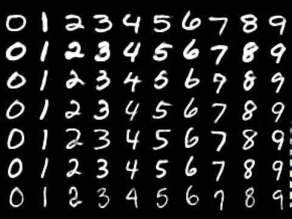

The following example demonstrates the Tensorflow bindings using the XOR function as example. The input features and the desired output labels are provided using placeholder values. The network is trained using gradient descent. Finally the network is demonstrated using the input features.
(use-modules (aiscm core) (aiscm tensorflow) (ice-9 format))
(define features (arr <float> (0 0) (0 1) (1 0) (1 1)))
(define labels (arr <float> (0) (1) (1) (0)))
(define s (make-session))
(define x (tf-placeholder #:dtype <float> #:shape '(-1 2) #:name "x"))
(define y (tf-placeholder #:dtype <float> #:shape '(-1 1) #:name "y"))
(define m1 (tf-variable #:dtype <float> #:shape '(2 2) #:name "m1"))
(run s '() (tf-assign m1 (tf-truncated-normal (tf-shape m1) #:dtype <float>)))
(define b1 (tf-variable #:dtype <float> #:shape '(2) #:name "b1"))
(run s '() (tf-assign b1 (fill <float> '(2) 0.0)))
(define h1 (tf-tanh (tf-add (tf-mat-mul x m1) b1)))
(define m2 (tf-variable #:dtype <float> #:shape '(2 1) #:name "m2"))
(run s '() (tf-assign m2 (tf-truncated-normal (tf-shape m2) #:dtype <float>)))
(define b2 (tf-variable #:dtype <float> #:shape '(1) #:name "b2"))
(run s '() (tf-assign b2 (arr <float> 0)))
(define ys (tf-sigmoid (tf-add (tf-mat-mul h1 m2) b2) #:name "ys"))
(define one (tf-cast 1 #:DstT <float>))
(define cost (tf-neg (tf-mean (tf-add (tf-mul y (tf-log ys)) (tf-mul (tf-sub one y) (tf-log (tf-sub one ys)))) (arr <int> 0 1))))
(define vars (list m1 b1 m2 b2))
(define gradients (tf-add-gradient cost vars))
(define alpha (tf-cast 1.0 #:DstT <float>))
(define step (map (lambda (v g) (tf-assign v (tf-sub v (tf-mul g alpha)))) vars gradients))
(for-each (lambda _ (run s (list (cons x features) (cons y labels)) step)) (iota 250))
(format #t "~a~&" (run s (list (cons x features)) ys))The MNIST dataset is a benchmark dataset for handwritten digit recognition.

The following example is a convolutional neural network achieving an error rate below 3%.
(use-modules (oop goops)
(ice-9 binary-ports)
(ice-9 format)
(srfi srfi-1)
(rnrs bytevectors)
(system foreign)
(aiscm core)
(aiscm xorg)
(aiscm util)
(aiscm tensorflow))
(define (read-images file-name)
(let* [(f (open-file file-name "rb"))
(magic (bytevector-u32-ref (get-bytevector-n f 4) 0 (endianness big)))
(n (bytevector-u32-ref (get-bytevector-n f 4) 0 (endianness big)))
(h (bytevector-u32-ref (get-bytevector-n f 4) 0 (endianness big)))
(w (bytevector-u32-ref (get-bytevector-n f 4) 0 (endianness big)))]
(if (not (eqv? magic 2051)) (error "Images file has wrong magic number"))
(let [(bv (get-bytevector-n f (* n h w)))]
(make (multiarray <ubyte> 3) #:memory (bytevector->pointer bv) #:shape (list n h w)))))
(define (read-labels file-name)
(let* [(f (open-file file-name "rb"))
(magic (bytevector-u32-ref (get-bytevector-n f 4) 0 (endianness big)))
(n (bytevector-u32-ref (get-bytevector-n f 4) 0 (endianness big)))]
(if (not (eqv? magic 2049)) (error "Label file has wrong magic number"))
(let [(bv (get-bytevector-n f n))]
(make (multiarray <ubyte> 1) #:memory (bytevector->pointer bv) #:shape (list n)))))
; Load MNIST data set available at http://yann.lecun.com/exdb/mnist/
(define images (read-images "train-images-idx3-ubyte"))
(define labels (read-labels "train-labels-idx1-ubyte"))
(define n (car (shape images)))
; Create Tensorflow session
(define s (make-session))
; Define placeholders for features (images) and labels
(define x (tf-placeholder #:dtype <ubyte> #:shape '(-1 28 28)))
(define y (tf-placeholder #:dtype <ubyte> #:shape '(-1)))
; Determine parameters for feature scaling
(define (sqr x) (* x x))
(define count (apply * (shape images)))
(define average (exact->inexact (/ (sum images) count)))
(define stddev (sqrt (/ (sum (sqr (- images average))) count)))
; Scale features and reshape to 4D array
(define r1 (tf-reshape (tf-mul (/ 1 stddev) (tf-sub (tf-cast x #:DstT <double>) average)) (arr <int> -1 28 28 1)))
; First convolutional layer with max-pooling and ReLU activation function.
(define k1 (tf-variable #:dtype <double> #:shape '(3 3 1 4)))
(define b1 (tf-variable #:dtype <double> #:shape '(4)))
(define c1 (tf-add (tf-conv2d r1 k1 #:strides '(1 1 1 1) #:padding 'VALID) b1))
(define p1 (tf-relu (tf-max-pool c1 #:strides '(1 2 2 1) #:ksize '(1 2 2 1) #:padding 'VALID)))
; Second convolutional layer with max-pooling and ReLU activation function.
(define k2 (tf-variable #:dtype <double> #:shape '(3 3 4 16)))
(define b2 (tf-variable #:dtype <double> #:shape '(16)))
(define c2 (tf-add (tf-conv2d p1 k2 #:strides '(1 1 1 1) #:padding 'VALID) b2))
(define p2 (tf-relu (tf-max-pool c2 #:strides '(1 2 2 1) #:ksize '(1 2 2 1) #:padding 'VALID)))
; Reshape to 2D array
(define d (* 5 5 16))
(define r2 (tf-reshape p2 (to-array <int> (list -1 d))))
; First fully connected layer with bias units and ReLU activation function.
(define m3 (tf-variable #:dtype <double> #:shape (list d 40)))
(define b3 (tf-variable #:dtype <double> #:shape '(40)))
(define l3 (tf-relu (tf-add (tf-mat-mul r2 m3) b3)))
; Second fully connected layer with bias units and softmax activation function.
(define m4 (tf-variable #:dtype <double> #:shape '(40 10)))
(define b4 (tf-variable #:dtype <double> #:shape '(10)))
(define l (tf-softmax (tf-add (tf-mat-mul l3 m4) b4)))
; Classification result of neural network.
(define prediction (tf-arg-max l 1 #:name "prediction"))
; Random initialization of network parameters
(define initializers
(list (tf-assign k1 (tf-mul (sqrt (/ 2 (* 3 3))) (tf-truncated-normal (arr <int> 3 3 1 4) #:dtype <double>)))
(tf-assign b1 (fill <double> '(4) 0.0))
(tf-assign k2 (tf-mul (sqrt (/ 2 (* 3 3 4))) (tf-truncated-normal (arr <int> 3 3 4 16) #:dtype <double>)))
(tf-assign b2 (fill <double> '(16) 0.0))
(tf-assign m3 (tf-mul (sqrt (/ 2 d)) (tf-truncated-normal (to-array <int> (list d 40)) #:dtype <double>)))
(tf-assign b3 (fill <double> '(40) 0.0))
(tf-assign m4 (tf-mul (/ 2 (sqrt 40)) (tf-truncated-normal (arr <int> 40 10) #:dtype <double>)))
(tf-assign b4 (fill <double> '(10) 0.0))))
(run s '() initializers)
; List of all network parameters
(define vars (list k1 k2 m3 b3 m4 b4))
; Logistic loss function
(define yh (tf-one-hot y 10 1.0 0.0))
(define (safe-log x) (tf-log (tf-maximum x 1e-10)))
(define (invert x) (tf-sub 1.0 x))
(define loss (tf-neg (tf-mean (tf-add (tf-mul yh (safe-log l)) (tf-mul (invert yh) (safe-log (invert l)))) (arr <int> 0 1))))
; Regularization term
(define regularization (tf-add (tf-mean (tf-square (tf-abs m3)) (arr <int> 0 1)) (tf-mean (tf-square (tf-abs m4)) (arr <int> 0 1))))
; Overall cost
(define la 0.02)
(define cost (tf-add loss (tf-mul la regularization)))
; Implement gradient descent step
(define gradients (tf-add-gradient cost vars))
(define alpha 0.4)
(define step (map (lambda (v g) (tf-assign v (tf-sub v (tf-mul g alpha)))) vars gradients))
; Perform gradient descent
(define j 0.0)
(for-each
(lambda (epoch)
(for-each
(lambda (i)
(let* [(range (cons i (+ i 50)))
(batch (list (cons x (unroll (get images range))) (cons y (get labels range))))
(js (run s batch cost))]
(set! j (+ (* 0.99 j) (* 0.01 js)))
(format #t "\repoch ~2d, ~5d/~5d: ~6,4f" epoch i n j)
(run s batch step)))
(iota (/ n 50) 0 50)))
(iota 3))
(format #t "~&")
; Load MNIST test data.
(define test-images (read-images "t10k-images-idx3-ubyte"))
(define test-labels (read-labels "t10k-labels-idx1-ubyte"))
(define n-test (car (shape test-images)))
; Display cost function result for (part of) training and test data
(define j (run s (list (cons x (unroll (get images '(0 . 10000)))) (cons y (get labels '(0 . 10000)))) loss))
(define jt (run s (list (cons x test-images) (cons y test-labels)) loss))
(format #t "train: ~6,4f; test: ~6,4f~&" j jt)
; Determine error rate
(define predicted (run s (list (cons x test-images)) prediction))
(define n-correct (sum (where (eq predicted test-labels) 1 0)))
(format #t "error rate: ~6,4f~&" (- 1.0 (/ n-correct n-test)))
; Display individual results
(define time (clock))
(define i -1)
(show
(lambda (dsp)
(set! i (1+ i))
(let* [(image (get test-images (modulo i 10000)))
(pred (get (run s (list (cons x image)) prediction) 0))]
(synchronise image (- i (elapsed time)) (event-loop dsp))
(format #t "~a~&" pred)
image))
#:width 280
#:io IO-OPENGL)The following code is for recording audio training data. The user has to speak the indicated word. Word boundaries are set by pressing return. The labels are stored as part of the file name. The audio data is stored in multiple MP3 files.
(use-modules (oop goops) (ice-9 format) (ice-9 rdelim) (aiscm core) (aiscm pulse) (aiscm ffmpeg))
(define words (list "stop" "go" "left" "right"))
(define rate 11025)
(define chunk 512); 21.5 chunks per second
(define record (make <pulse-record> #:typecode <sint> #:channels 1 #:rate rate))
(format #t "offset? ")
(define n (string->number (read-line)))
(while #t
(let [(choice (list-ref words (random (length words))))]
(format #t "~d: ~a~&" n choice)
(if (not (eq? (read-char) #\newline)) (break))
(flush record)
(read-char)
(let* [(count (inexact->exact (* chunk (ceiling (/ (* rate (latency record)) chunk)))))
(samples (read-audio record count))
(file-name (format #f "speech-~5,'0d-~a-~6,'0d.wav" n choice count))
(output (open-ffmpeg-output file-name #:rate rate #:typecode <sint> #:channels 1 #:audio-bit-rate 80000))]
(write-audio samples output)
(destroy output)
(set! n (1+ n)))))Furthermore background noise (e.g. mobile robot driving) is recorded using the following code.
(use-modules (oop goops) (ice-9 format) (aiscm core) (aiscm pulse) (aiscm ffmpeg))
(define rate 11025)
(define chunk 512)
(define seconds 300); background noise seconds
(define count (ceiling (/ (* rate seconds) chunk)))
(format #t "Recording ~a seconds of background noise~&" seconds)
(define output (open-ffmpeg-output "background.wav" #:rate rate #:typecode <sint> #:channels 1 #:audio-bit-rate 80000))
(define record (make <pulse-record> #:typecode <sint> #:channels 1 #:rate rate))
(define samples (read-audio record (* count chunk)))
(write-audio samples output)
(destroy output)The training program is shown below. The program trains a sequence-to-sequence GRU to classify words. Note that the training takes one hour on a CPU. At the end assignment instructions are created “freezing” the model.
(use-modules (oop goops) (ice-9 ftw) (ice-9 regex) (srfi srfi-1) (srfi srfi-26) (aiscm core) (aiscm ffmpeg)
(aiscm samples) (aiscm tensorflow) (aiscm util))
(define words (list "stop" "go" "left" "right"))
(define rate 11025)
(define factor (/ 1.0 32768))
(define chunk 512); 21.5 chunks per second
(define max-delay 60); maximum number of chunks between two spoken words
(define signal 10); number of chunks where signal is kept on
(define chunk2 (1+ (/ chunk 2)))
(define file-names (filter (cut string-match "speech-.*\\.wav" <>) (scandir ".")))
(define n-hidden 128)
(define seconds 300); background noise seconds
(define count (ceiling (/ (* rate seconds) chunk)))
(define window 100)
(define background (reshape (from-samples (read-audio (open-ffmpeg-input "background.wav") (* count chunk))) (list count chunk)))
(define data
(map
(lambda (file-name)
(let* [(match (string-match "speech-(.*)-(.*)-(.*)\\.wav" file-name))
(word (match:substring match 2))
(index (list-index (cut equal? word <>) words))
(input (open-ffmpeg-input file-name))
(count (string->number (match:substring match 3)))
(n (/ count chunk)) ]
(cons index (reshape (from-samples (read-audio input count)) (list n chunk)))))
file-names))
(define (shift background)
(let* [(len (car (shape background)))
(offset (random len))
(result (make (multiarray <sint> 2) #:shape (shape background)))]
(set result (cons 0 offset) (get background (cons (- len offset) len)))
(set result (cons offset len) (get background (cons 0 (- len offset))))
result))
(define (create-sample offset)
(let* [(pause (random max-delay))
(idx (random (length data)))
(item (list-ref data idx))
(label (car item))
(candidate (cdr item))
(len (car (shape candidate)))]
(if (>= (+ offset pause len signal) count)
(cons (shift background)
(fill <int> (list (car (shape background))) 0))
(let [(sample (create-sample (+ offset pause len signal)))
(interval (cons (+ offset pause) (+ offset pause len)))]
(set (car sample) (cons 0 chunk) interval (+ candidate (get background (cons 0 chunk) interval)))
(set (cdr sample) (cons (+ offset pause len) (+ offset pause len signal)) (1+ label))
sample))))
(define x (tf-placeholder #:dtype <sint> #:shape (list -1 chunk) #:name "x"))
(define y (tf-placeholder #:dtype <int> #:shape '(-1) #:name "y"))
(define c (tf-placeholder #:dtype <double> #:shape (list 1 n-hidden) #:name "c"))
(define y-hot (tf-one-hot y (1+ (length words)) 1.0 0.0))
(define (fourier x) (tf-rfft (tf-mul (tf-cast x #:DstT <float>) (tf-cast factor #:DstT <float>)) (to-array <int> (list chunk))))
(define (spectrum x) (let [(f (fourier x))] (tf-log (tf-add (tf-cast (tf-real (tf-mul f (tf-conj f))) #:DstT <double>) 1.0))))
(define (nth x i) (tf-expand-dims (tf-gather x i) 0))
(define wcc (tf-variable #:dtype <double> #:shape (list n-hidden n-hidden)))
(define wcx (tf-variable #:dtype <double> #:shape (list chunk2 n-hidden)))
(define bc (tf-variable #:dtype <double> #:shape (list n-hidden)))
(define wuc (tf-variable #:dtype <double> #:shape (list n-hidden n-hidden)))
(define wux (tf-variable #:dtype <double> #:shape (list chunk2 n-hidden)))
(define bu (tf-variable #:dtype <double> #:shape (list n-hidden)))
(define w (tf-variable #:dtype <double> #:shape (list n-hidden 5)))
(define b (tf-variable #:dtype <double> #:shape (list 5)))
(define vars (list wcc wcx bc wuc wux bu w b))
(define initializers
(list
(tf-assign wcc (tf-mul (sqrt (/ 2 n-hidden)) (tf-truncated-normal (to-array <int> (list n-hidden n-hidden)) #:dtype <double>)))
(tf-assign wcx (tf-mul (sqrt (/ 2 chunk2)) (tf-truncated-normal (to-array <int> (list chunk2 n-hidden)) #:dtype <double>)))
(tf-assign bc (fill <double> (list n-hidden) 0.0))
(tf-assign wuc (tf-mul (sqrt (/ 2 n-hidden)) (tf-truncated-normal (to-array <int> (list n-hidden n-hidden)) #:dtype <double>)))
(tf-assign wux (tf-mul (sqrt (/ 2 chunk2)) (tf-truncated-normal (to-array <int> (list chunk2 n-hidden)) #:dtype <double>)))
(tf-assign bu (fill <double> (list n-hidden) 0.0))
(tf-assign w (tf-mul (sqrt (/ 2 n-hidden)) (tf-truncated-normal (to-array <int> (list n-hidden 5)) #:dtype <double>)))
(tf-assign b (fill <double> (list 5) 0.0))))
(define (gru x c)
(let* [(gu (tf-sigmoid (tf-add (tf-add (tf-mat-mul c wuc) (tf-mat-mul x wux)) bu)))
(cs (tf-tanh (tf-add (tf-add (tf-mat-mul (tf-mul gu c) wcc) (tf-mat-mul x wcx)) bc)))]
(tf-add (tf-mul gu c) (tf-mul (tf-sub 1.0 gu) cs))))
(define (output c)
(tf-softmax (tf-add (tf-mat-mul c w) b)))
(define c_ c)
(define outputs '())
(for-each
(lambda (i)
(set! c_ (gru (spectrum (nth x i)) c_))
(set! outputs (attach outputs (output c_))))
(iota window))
(define cs (tf-identity (gru (spectrum x) c) #:name "cs"))
(define pred (tf-gather (tf-arg-max (output c) 1) 0 #:name "prediction"))
(define (safe-log x) (tf-log (tf-maximum x 1e-10)))
(define loss (tf-div (tf-neg (tf-add-n (map (lambda (output i) (tf-sum (tf-mul (safe-log output) (nth y-hot i))
(arr <int> 0 1)))
outputs
(iota window))))
(tf-cast window #:DstT <double>)))
(define alpha 0.05)
(define gradients (tf-add-gradient loss vars))
(define step (map (lambda (v g) (tf-assign v (tf-sub v (tf-mul g alpha)))) vars gradients))
(define session (make-session))
(run session '() initializers)
(define j 1.0)
(for-each
(lambda (epoch)
(let [(sample (create-sample 0))
(c0 (fill <double> (list 1 n-hidden) 0.0))]
(for-each
(lambda (i)
(let* [(range (cons (* i window) (* (1+ i) window)))
(batch (list (cons x (get (car sample) (cons 0 chunk) range)) (cons y (get (cdr sample) range))))
(l (run session (cons (cons c c0) batch) loss))]
(set! j (+ (* 0.99 j) (* 0.01 l)))
(run session (cons (cons c c0) batch) step)
(format #t "~a ~a~&" epoch j)
(set! c0 (run session (cons (cons c c0) batch) c_))))
(iota (floor (/ count window))))))
(iota 200))
(tf-assign wcc (tf-const #:value (run session '() wcc) #:dtype <double>) #:name "init-wcc")
(tf-assign wcx (tf-const #:value (run session '() wcx) #:dtype <double>) #:name "init-wcx")
(tf-assign bc (tf-const #:value (run session '() bc ) #:dtype <double>) #:name "init-bc" )
(tf-assign wuc (tf-const #:value (run session '() wuc) #:dtype <double>) #:name "init-wuc")
(tf-assign wux (tf-const #:value (run session '() wux) #:dtype <double>) #:name "init-wux")
(tf-assign bu (tf-const #:value (run session '() bu ) #:dtype <double>) #:name "init-bu" )
(tf-assign w (tf-const #:value (run session '() w ) #:dtype <double>) #:name "init-w" )
(tf-assign b (tf-const #:value (run session '() b ) #:dtype <double>) #:name "init-b" )
(tf-graph-export "speech-model.meta")The “frozen” model then can be loaded and applied to real-time audio data as follows.
(use-modules (oop goops)
(ice-9 format)
(rnrs bytevectors)
(aiscm tensorflow)
(aiscm core)
(aiscm pulse))
;(define robot (socket PF_INET SOCK_DGRAM 0))
;(connect robot AF_INET (car (hostent:addr-list (gethostbyname "raspberrypi.local"))) 2200)
;(define commands (list "0,0,0" "-100,-100,0" "100,-100,0" "-100,100,0"))
(define words (list "stop" "go" "left" "right"))
(define rate 11025)
(define chunk 512)
(define n-hidden 128)
(tf-graph-import "speech-model.meta")
(define x (tf-graph-operation-by-name "x"))
(define c (tf-graph-operation-by-name "c"))
(define cs (tf-graph-operation-by-name "cs"))
(define pred (tf-graph-operation-by-name "prediction"))
(define session (make-session))
(run session '()
(list (tf-graph-operation-by-name "init-wcc")
(tf-graph-operation-by-name "init-wcx")
(tf-graph-operation-by-name "init-bc" )
(tf-graph-operation-by-name "init-wuc")
(tf-graph-operation-by-name "init-wux")
(tf-graph-operation-by-name "init-bu" )
(tf-graph-operation-by-name "init-w" )
(tf-graph-operation-by-name "init-b" )))
(define c0 (fill <double> (list 1 n-hidden) 0.0))
(define record (make <pulse-record> #:typecode <sint> #:channels 1 #:rate rate))
(while #t
(let [(samples (reshape (read-audio record chunk) (list 1 chunk)))]
(set! c0 (run session (list (cons x samples) (cons c c0)) cs))
(let [(out (run session (list (cons c c0)) pred))]
(if (not (zero? out))
(begin
;(display (list-ref commands (1- out)) robot)
(format #t "~a~&"(list-ref words (1- out))))))))